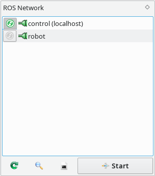
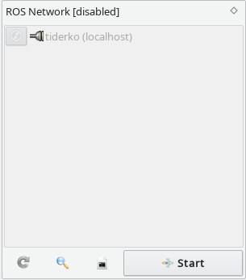
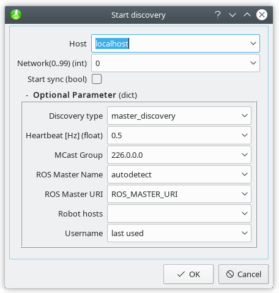

 
The  Refresh-button lets you query the current state of the ROS masters from all running master_discovery nodes.
Refresh-button lets you query the current state of the ROS masters from all running master_discovery nodes.
The icons  and
and  show whether a connection to the host exists. The color of the icon indicates the connection quality as determined by the master_discovery node.
show whether a connection to the host exists. The color of the icon indicates the connection quality as determined by the master_discovery node.
The  next to each host name indicates whether the parameter servers will be synchronized by the master_sync node. You can toggle ROS master synchronization by click on this icon. A synchronisation dialog with additional options is available by button on the `host description panel`.
next to each host name indicates whether the parameter servers will be synchronized by the master_sync node. You can toggle ROS master synchronization by click on this icon. A synchronisation dialog with additional options is available by button on the `host description panel`.
 The multimaster capabilities are disabled, if the local ROS_MASTER_URI is referenced to a remote host.
The multimaster capabilities are disabled, if the local ROS_MASTER_URI is referenced to a remote host.
You can initiate the discovery process with the Start-button on the ROS Network widget. The discovery node can also be started on a remote host. Click on the Start-button and enter the hostname or IP address in the dialog below.

Additionally, you can enter a network number (0..99) to create your own multi robot network. Thus you avoid the redundant synchronization to non-participant robots. The roscore will be run automatically via SSH if it is not currently available.If no multicast communication is available sets the static hosts parameter to the list of availabele hosts separated by comma. This also increases the network load!
On problems while launch master discovery or master sync on remote hosts you can use  to get the log output from these node.
to get the log output from these node.